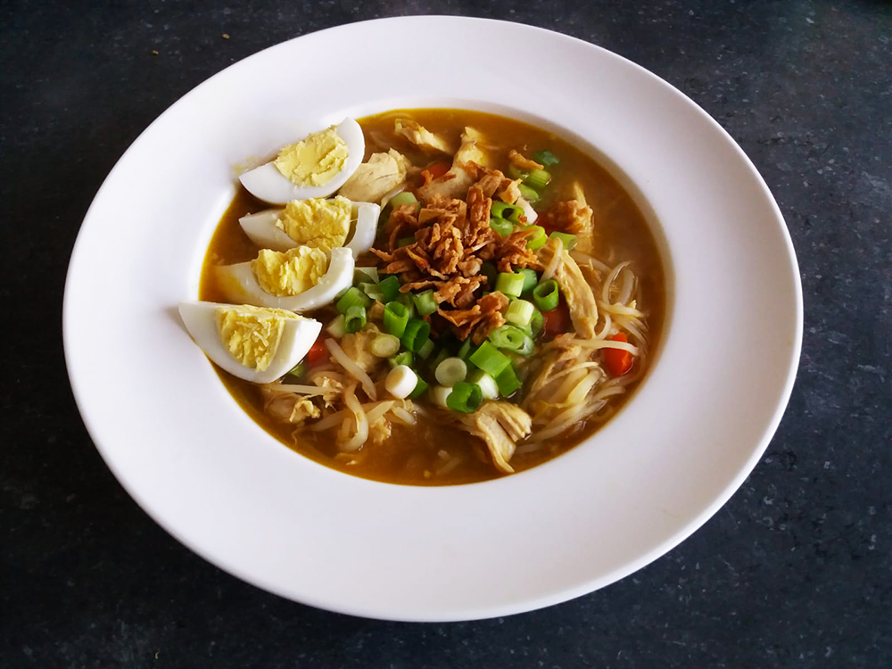

indiase kofta curry

pannenkoek

crêpe met kiwi

vietnamese pannenkoeken (banh xeo)

paksoi noedels met garnalen

hawaiiaanse poké bowl

marokkaanse tajine

coq au vin

indiase tikka masala

koreaanse bibimbap

vietnamese filodeegloempia uit de airfryer

thaise noedels (pad thai)

sri lankaanse pompoen curry

chili sin carne met guacamole

bami met spinazie

indonesische kippensoep (soto ajam)

Bereidingsduur: 35 minuten
Aantal personen: 3
Ingrediënten:
60 gram rijstnoedels
3 eieren
5 lente uitjes
340 milliliter kippenbouillon
400 gram kipfilet
125 gram taugé
1 paprika
2 teentjes knoflook
3 handjes gebakken uitjes
3 eetlepels limoensap
1 theelepel ketjap
1 theelepel sambal
1 eetlepel gemberpoeder
1 eetlepel kerriepoeder
1 stengel citroengras
naar wens kokospoeder
60 gram rijstnoedels
3 eieren
5 lente uitjes
340 milliliter kippenbouillon
400 gram kipfilet
125 gram taugé
1 paprika
2 teentjes knoflook
3 handjes gebakken uitjes
3 eetlepels limoensap
1 theelepel ketjap
1 theelepel sambal
1 eetlepel gemberpoeder
1 eetlepel kerriepoeder
1 stengel citroengras
naar wens kokospoeder
Instructies:
1. Kook de eieren en laat deze daarna schrikken. Snijd ondertussen de paprika en lente uitjes klein en pers de knoflook.
2. Pak een soeppan, voeg olie toe en fruit de knoflook. Voeg de paprika, kip, bouillon, 500 milliliter water, sambal, ketjap, limoensap en de kruiden toe.
3. Laat dit 15 minuten koken en haal dan de kip eruit en voeg de taugé en noedels toe aan de soep.
4. Pluk de kip in stukjes en doe terug in de soep. Laat de soep nog 10 minuten zachtjes koken. Snijd ondertussen de eieren in de gewenste grootte.
5. Eventueel kun je de soep nog meer op smaak brengen met de kruiden. Serveer de soep met daarop het ei, de lente uitjes en gebakken uitjes. Gebruik eventueel kokospoeder voor een mildere smaak.
1. Kook de eieren en laat deze daarna schrikken. Snijd ondertussen de paprika en lente uitjes klein en pers de knoflook.
2. Pak een soeppan, voeg olie toe en fruit de knoflook. Voeg de paprika, kip, bouillon, 500 milliliter water, sambal, ketjap, limoensap en de kruiden toe.
3. Laat dit 15 minuten koken en haal dan de kip eruit en voeg de taugé en noedels toe aan de soep.
4. Pluk de kip in stukjes en doe terug in de soep. Laat de soep nog 10 minuten zachtjes koken. Snijd ondertussen de eieren in de gewenste grootte.
5. Eventueel kun je de soep nog meer op smaak brengen met de kruiden. Serveer de soep met daarop het ei, de lente uitjes en gebakken uitjes. Gebruik eventueel kokospoeder voor een mildere smaak.